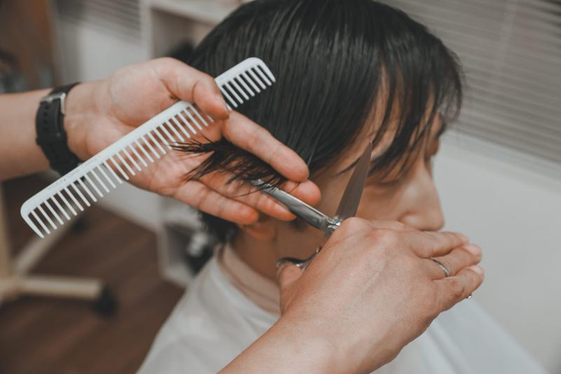
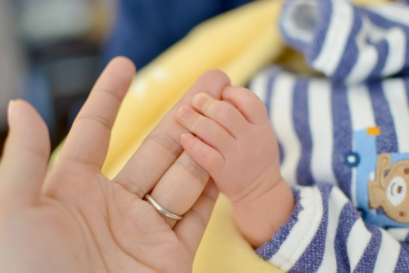
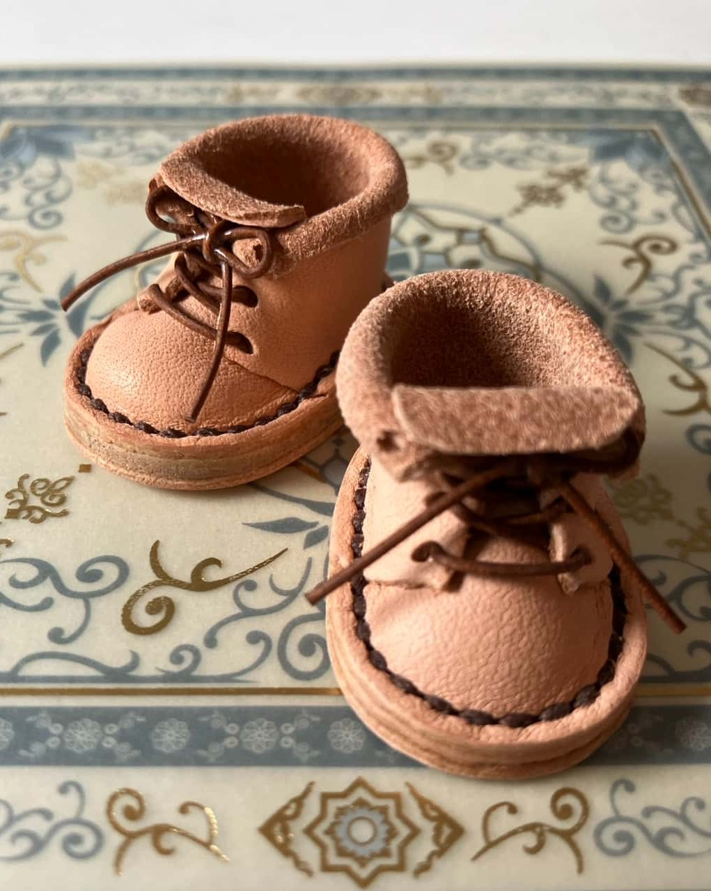

About Me



ご覧いただきありがとうございます。砺波 世莉佳と申します。
2010年に東京の美容短大を卒業後、
地元に戻りＪＡアルプスの金融部門窓口業務に2年8か月従事しました。
その後は専業主婦として子育てに専念しつつ、PTA活動や地域活動に積極的に参加してまいりました。
2023年に離婚を機にハンドメイド制作・販売を開始し、インターネットを活用した商品PRや販売管理の経験を積みました。
また、2024年秋からはインターネット・アカデミーでWebデザイナー育成コースを1年間受講し、Webデザインやコーディングの基礎を体系的に学びました。
ブランクはありますが、人と関わることが好きで、窓口業務や地域活動で培ったコミュニケーション力と責任感には自信があります。
実務経験はまだありませんが、学んだスキルを活かしつつ、現在も日々学習を続けています。
これらの知識と意欲を活かし、今後の制作活動やプロジェクトに積極的に貢献してまいります。
好きなこと・・・・ドラマ鑑賞 / 読書 / 手芸 / 子供たちの楽しそうな顔を見る